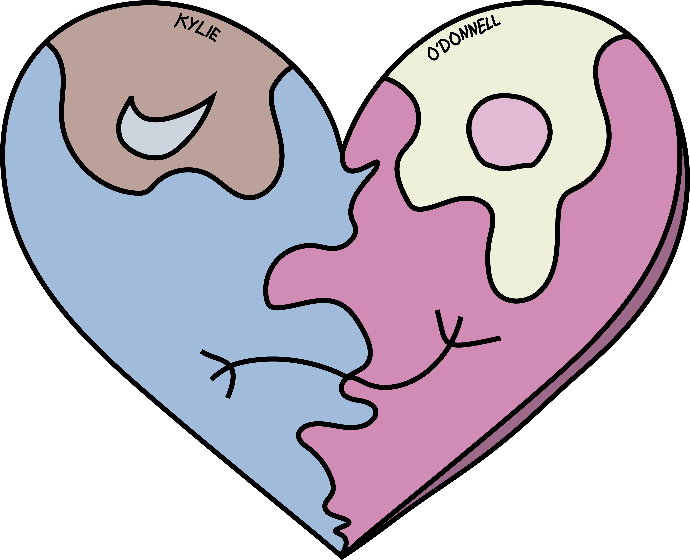

Cal Poly CPE Department
2024 CPE Banquet Video
Edited department event media for the Computer Science and Software Engineering community, supporting banquet storytelling and recognition materials.
Open videoAbout
My work sits between design and development: translating ideas into clean UI systems, production-ready graphics, and stories that explain the user problem clearly. I am especially interested in roles where product thinking, visual design, and technical context overlap.
Website Design

Website redesign
From design concept to full implementation for a refreshed company website experience.

Product case study
A web-based concept for helping Cal Poly students make faster study-space decisions using clearer occupancy information and API-backed data.
Digital design system
Typography, color, components, buttons, icons, and form states for a focused productivity tracking experience.

Mobile UI
Mid-fidelity mobile prototype screens for account creation, welcome-back moments, and a clean first-run product path.
Visual Design

Instagram, Discord, TikTok, LinkedIn, and newsletter graphics built for internal and external audiences.

Banquet graphics, programs, posters, videos, department posts, newsletters, and site updates for the Computer Science department.

Magazine covers, zines, band posters, Illustrator experiments, and infographics with a strong editorial point of view.

Quick-turn marketing visuals, a trifold pitch poster, and Figma product brainstorming during a software development internship.
Videos Edited
Cal Poly CPE Department
Edited department event media for the Computer Science and Software Engineering community, supporting banquet storytelling and recognition materials.
Open videoPersonal Edit
A square-format edit made from my first-year school photos, originally created for Instagram as a personal recap.
Open videoPersonal Edit
A second-year recap edit using school photos, made to capture the fun, personal side of editing and visual storytelling.
Open videoTools and strengths
Resume